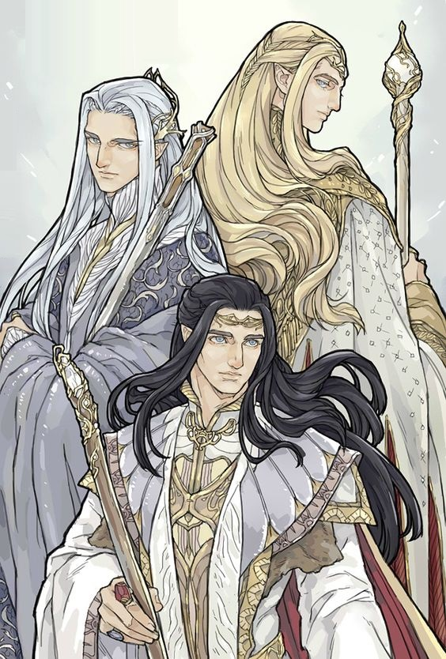

Playable Races > Sun Elf
Elves are mystical humanoid creatures attuned to worldly spirits. They came from another world eons ago. Originally an immortal race of celestial protectors, they sacrificed their infinite lifespans to experience mortal joys like love and lust.
Sun Elves are the closest in form to their original ancestors. They live in the faraway island nation of Goldstar that is impossible to find by mortal means. They are roughly the size of an adolescent human, with blonde, white or (rarely) black hair. They are distinctively more refined than other Elves, and are extremely aloof to the point of coming off as creepy or scatterbrained. Despite their appearance, they are searingly intelligent and well-read, due to their long lifespans that number millenia.
Magical Attunement: Elves are gifted with good control of magic; Sun Elves calculate their maximum spell slots as if they were 2 levels higher.
Transcendence: Elves cannot be charmed or put to sleep, and may hide in plain sight.
Racials: +2 WIS +2 CHA -2 STR +4 Knowledge (Magic) +4 Use Magic Device
Health: 1d6 health points per level.
Origin: The vast majority of Sun Elves hail from the Island of Goldstar, a dozen of them or so tend to live nomadic lives, observing the humans of Northern Karra with distant amusement.